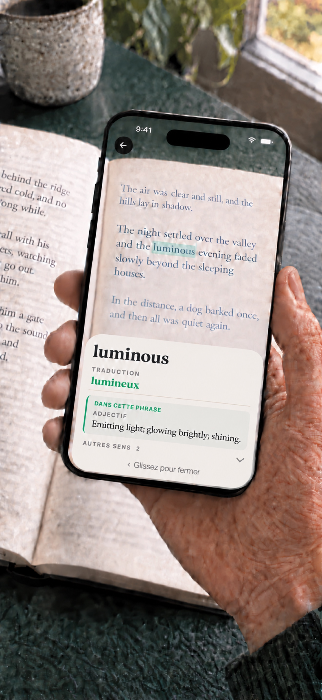

Visez un mot inconnu.
Placez le petit cercle vert sur le mot. Un surlignage le parcourt au moment de la reconnaissance.
Un compagnon pour les livres papier
Un mot inconnu ne devrait pas vous sortir d’un bon livre. Visez un mot avec l’appareil photo de votre téléphone, découvrez son sens et reprenez votre lecture. Rien à saisir.
iPhone · iOS 17+ / Android 8.0+ · $1.99 USD

Affichez les traductions des mots à côté des définitions anglaises. Choisissez parmi 24 langues de traduction facultatives : les langues autres que l’anglais citées ci-dessus, ainsi que le grec. Les packs se téléchargent séparément. Le grec est proposé uniquement pour les traductions de mots. Le kurmanji utilise l’alphabet latin, pas le sorani ; le malais utilise le rumi, pas le jawi. Les définitions et équivalents viennent des ressources linguistiques créditées.
Traduisez en anglais les mots des 23 langues de livres prises en charge autres que l’anglais.
Sur les téléphones compatibles sous Android 12 ou version ultérieure, avec au moins 8 Go de RAM, un modèle facultatif sur l’appareil aide à choisir un sens pour les livres anglais. Son téléchargement se fait séparément via Google Play. L’application vérifie les performances et les ressources disponibles avant de l’activer ; la configuration minimale ne garantit pas sa disponibilité. Le choix s’affiche seulement s’il est prêt à l’ouverture de la définition. La recherche habituelle reste disponible sans ce modèle.
Les images et le texte reconnu sont traités sur votre appareil. Google ML Kit recueille des diagnostics techniques et des données d’utilisation. Les téléchargements transmettent les informations habituelles de connexion aux hébergeurs. Si vous choisissez une recherche Google, la requête est envoyée à votre navigateur et à Google et nécessite Internet. Consultez la politique de confidentialité Android.
Android 8.0 ou version ultérieure et une caméra sont nécessaires.
Un instant de curiosité
Sans taper ni changer d’application. Un coup d’œil, puis retour au livre.
Placez le petit cercle vert sur le mot. Un surlignage le parcourt au moment de la reconnaissance.
La définition apparaît. Lisez-la d’un coup d’œil ou explorez les autres sens au besoin.
Faites glisser la définition pour la fermer et retrouvez votre phrase. L’appareil photo est prêt pour le prochain mot inconnu.
Pensé pour votre façon de lire
Lisez dans la langue de votre livre. Téléchargez uniquement les dictionnaires utiles.
iPhone: Lorsqu’un sens est confirmé pour la phrase, sa définition apparaît en premier.
Comment le sens est choisi ↓Les dictionnaires et traductions installés fonctionnent sans connexion.
Tous les dictionnaires et packs de traduction disponibles sont compris. Sans abonnement ni achat intégré.
Un peu plus de compréhension
Lorsqu’un sens est confirmé pour la phrase, sa définition apparaît en premier. Les autres sens restent accessibles.
Le choix du sens en contexte nécessite un iPhone compatible avec Apple Intelligence disponible sous iOS 26 ou ultérieur. Sinon, le premier sens du dictionnaire apparaît.
Les pluriels et les formes conjuguées peuvent mener à leur entrée de dictionnaire pour retrouver le mot dont vous avez besoin.
Vous lisez en anglais ? Ajoutez un équivalent dans la langue de votre choix à côté de la définition anglaise. Téléchargez le pack une fois, puis utilisez-le hors ligne.
Les équivalents varient selon le mot et la langue. Il s’agit de mots individuels, pas de pages entières.

Choisissez la langue du livre
Choisissez parmi 24 langues de livre. L’anglais est intégré ; les autres dictionnaires se téléchargent au besoin. Sélectionnez la langue du livre, puis touchez Commencer la lecture.
Vous lisez un livre anglais ? Choisissez parmi 24 packs de traduction de mots distincts : les 23 langues téléchargeables ci-dessus, plus le grec. Traduisez en anglais les mots des 23 langues de livres prises en charge autres que l’anglais. La traduction des définitions en anglais est facultative et dépend des modèles compatibles disponibles.
26 langues d’interface. Touchez l’engrenage sur l’accueil, puis Réglages → Langue de l’app. La langue du téléphone est utilisée par défaut ; si elle n’est pas prise en charge, l’app utilise l’anglais. La langue du livre reste distincte.
Le grec propose une interface et des traductions de mots anglais, sans lecture de livres grecs. Le kurde couvre le kurmanji en alphabet latin, pas le sorani ; le malais couvre le rumi en alphabet latin. Le chinois couvre les écritures simplifiée et traditionnelle. La couverture varie selon le mot, la forme et la langue.
L’essentiel
Les dictionnaires et traductions installés fonctionnent sans connexion.
Les images et les mots reconnus restent sur votre iPhone. Sans compte, publicité, statistique ni suivi.
Tous les dictionnaires et packs de traduction disponibles sont compris. Sans abonnement ni achat intégré.
Oui. Le dictionnaire anglais est intégré. Téléchargez les autres dictionnaires et traductions avec une connexion ; une fois installés, ils fonctionnent hors ligne. La consultation du catalogue nécessite Internet.
Les 24 langues de livre figurent ci-dessus. L’anglais est intégré ; les 23 autres dictionnaires se téléchargent séparément. Choisissez la langue du livre avant de lire. Le chinois couvre les deux écritures ; le kurde couvre le kurmanji en alphabet latin et le malais, le rumi.
Les équivalents de mots s’affichent à côté des définitions anglaises. Sous iOS 18 ou ultérieur, vous pouvez aussi choisir des définitions traduites pour les livres anglais dans 19 langues compatibles après téléchargement des fichiers nécessaires. Traduisez en anglais les mots des 23 langues de livres prises en charge autres que l’anglais. La traduction des définitions en anglais est facultative et dépend des modèles compatibles disponibles.
Lorsqu’un sens est confirmé pour la phrase, sa définition apparaît en premier. Les autres sens restent accessibles. Le choix du sens en contexte nécessite un iPhone compatible avec Apple Intelligence disponible sous iOS 26 ou ultérieur. Sinon, le premier sens du dictionnaire apparaît.
Booktionary nécessite un iPhone sous iOS 17 ou une version ultérieure. Un bon éclairage aide à reconnaître le texte.
Non. Les images, les mots reconnus et les recherches restent sur votre appareil. Sans compte, publicité ni statistiques. Le téléchargement des packs contacte l’hébergeur, qui peut recevoir votre adresse IP.
Questions, problèmes, ou un mot mal lu : fredddv@hotmail.com
Pour l’amour des livres papier
Achat unique. Sans abonnement. · iPhone · iOS 17+ / Android 8.0+